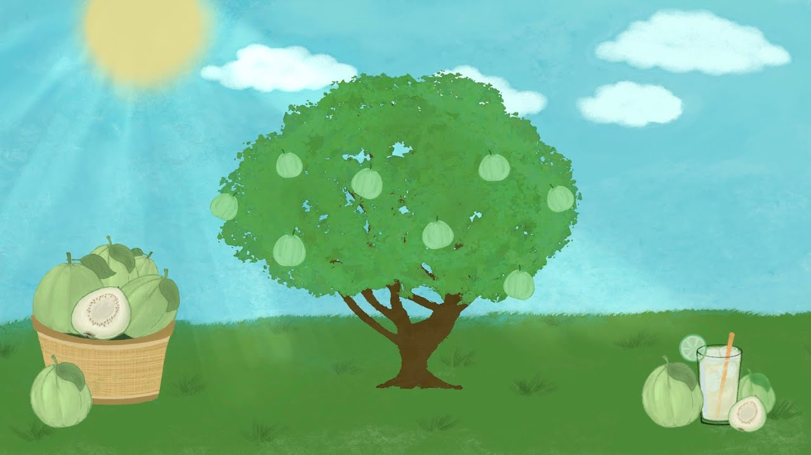
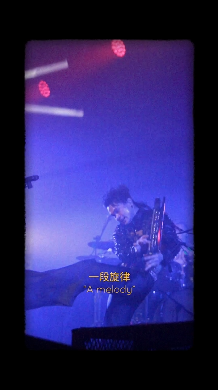

橫式 16:9 · 知識動畫

國民水果「芭樂」特輯
農業知識科普動畫 · 農業知識入口網官方收錄
以家鄉高雄阿蓮的芭樂果園記憶為發想，將國民水果的生長環境、營養指標與特調飲品，轉譯為生動流暢的動態科普動畫短片。
點擊開啟劇場播放器 ↗
MOTION & VIDEO EDITING
專注於節奏流暢感與資訊動態敘事，涵蓋農業知識普及動畫短片與現場音樂短影音紀錄。
擅長將龐雜資訊拆解轉譯為生動節奏，結合視覺分鏡腳本、動態剪輯與音畫同步感知。

以家鄉高雄阿蓮的芭樂果園記憶為發想，將國民水果的生長環境、營養指標與特調飲品，轉譯為生動流暢的動態科普動畫短片。

以底片膠卷顆粒質感與舞台強烈光影為視覺基底，精準捕捉音樂重音切換畫面節奏，將現場的心流律動與日常感知凝聚於直式短影音。